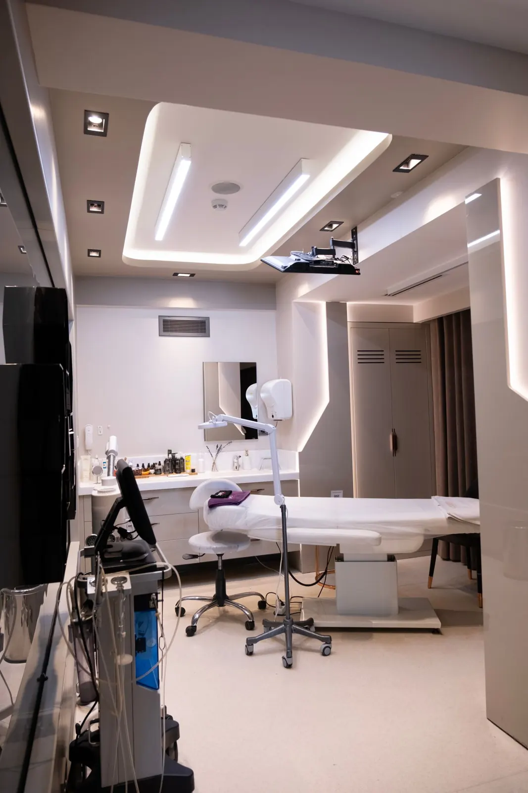
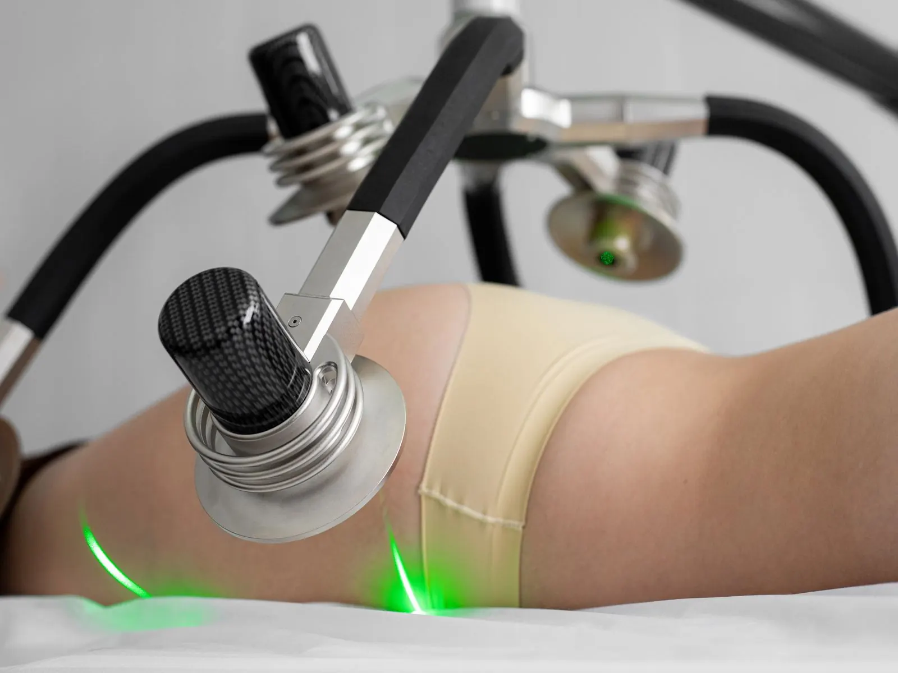
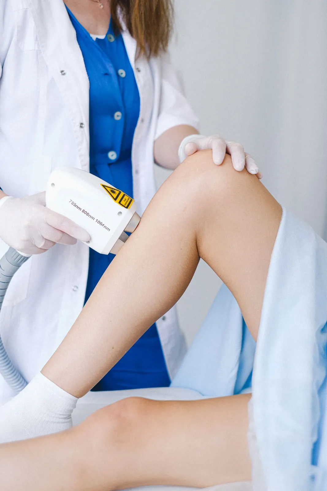
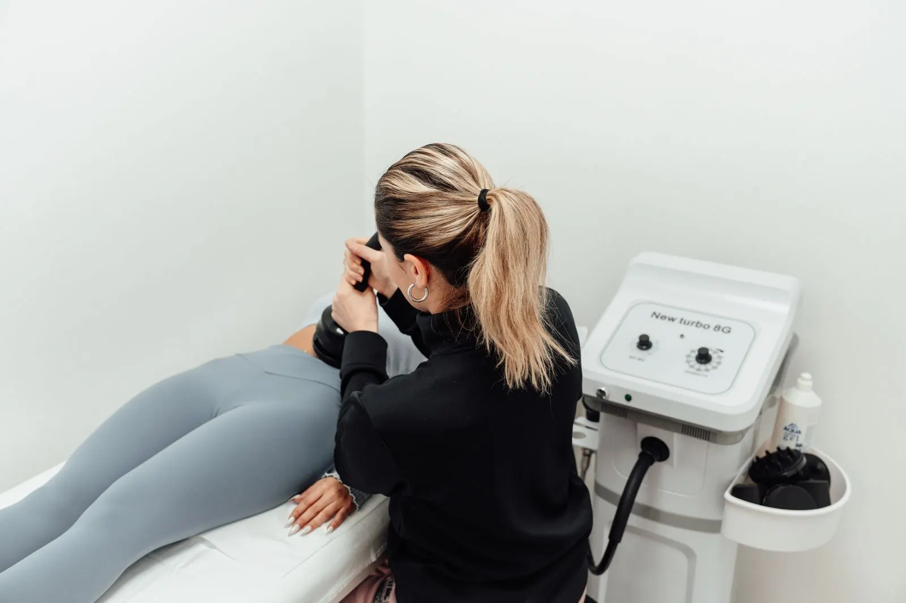
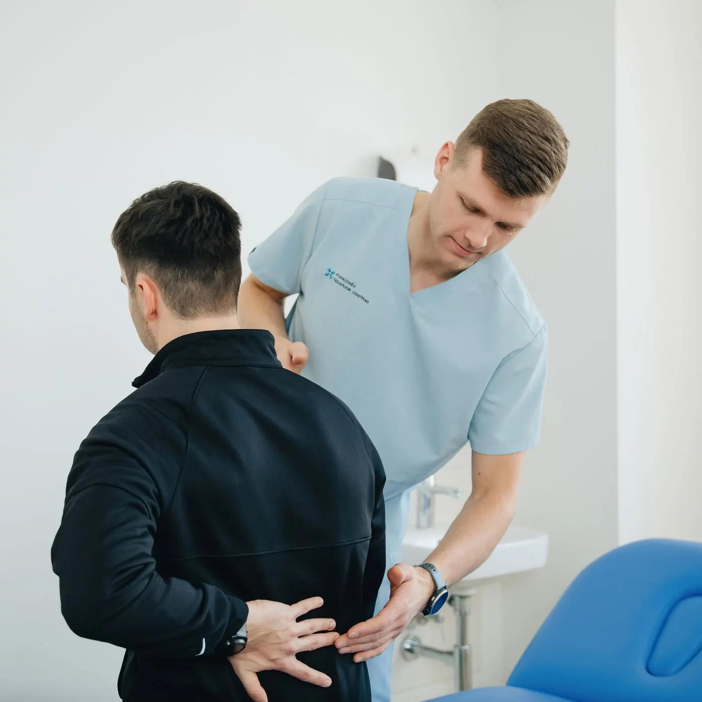
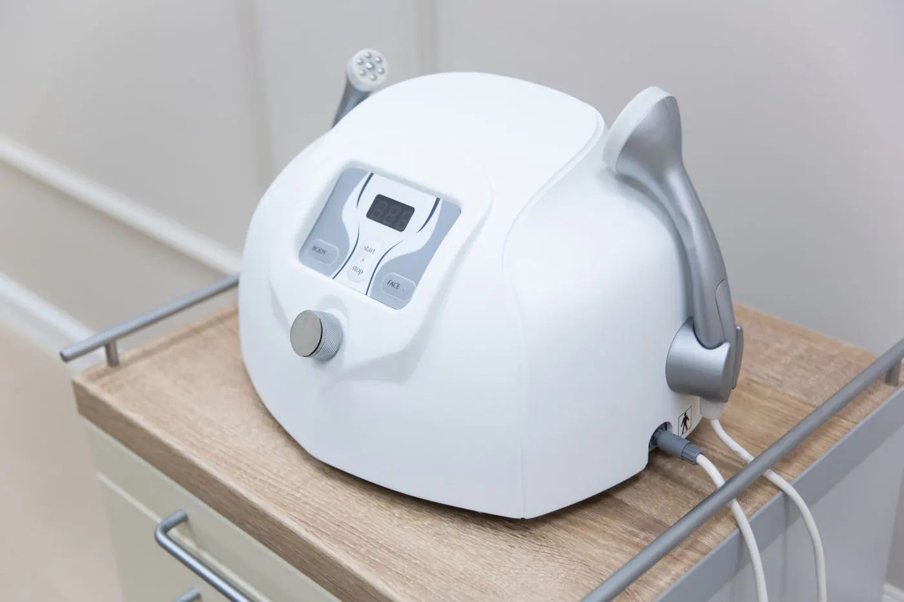
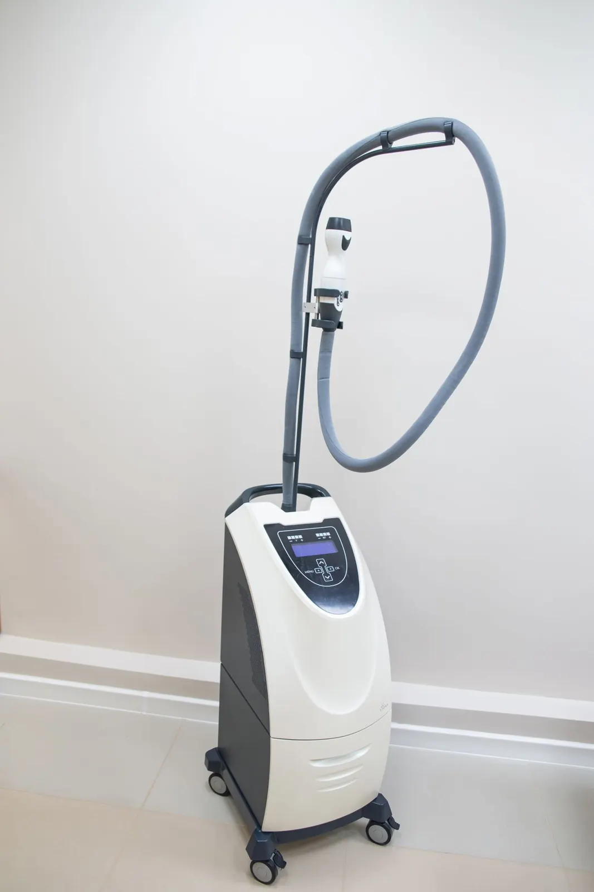
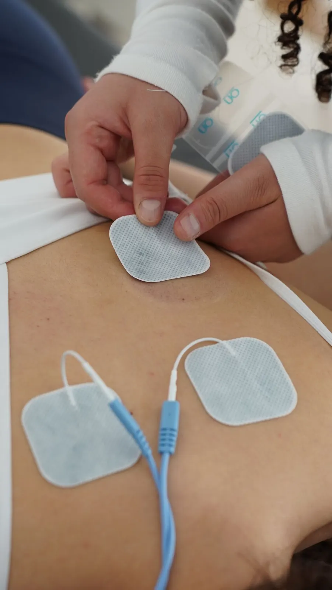
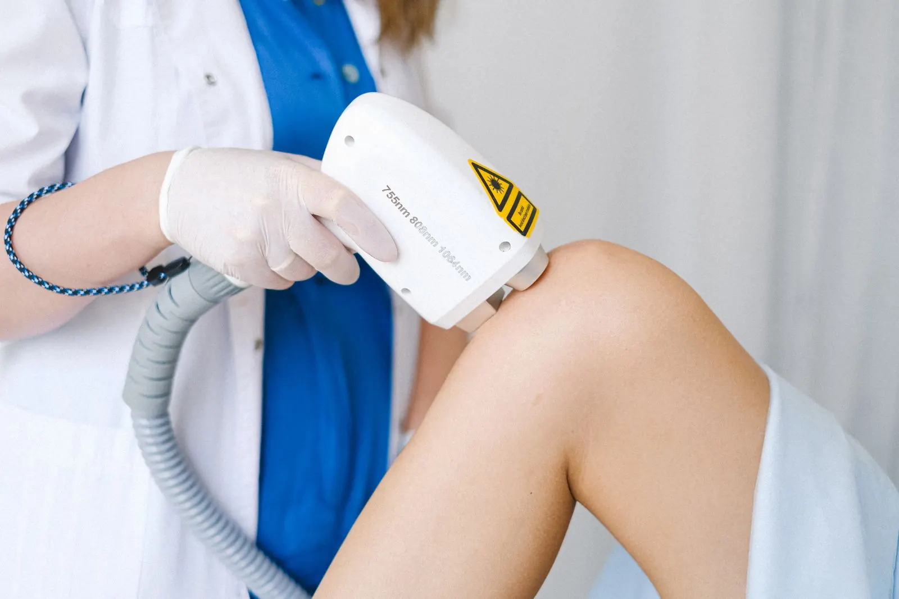

VB-01Contorno
Vérona Contour
Para gordura localizada
- Avaliação com medidas, adipômetro e bioimpedância
- Criolipólise ou ultrassom na área indicada
- Drenagem ou pressoterapia de apoio
- Reavaliação com as mesmas medidas
Goiânia Estética corporal de precisão
Avaliação com medidas, bioimpedância e fotos padronizadas, tecnologia explicada sem mistério e reavaliação com os mesmos critérios do início. Você sabe o que está fazendo e por quê.

Ficha da avaliação
Perimetria, adipômetro, bioimpedância, fotos padronizadas e histórico de saúde. Sem isso, não indicamos protocolo.
01 Seu objetivo
Escolha o objetivo e veja o protocolo, os tratamentos e as tecnologias que a equipe costuma considerar. Quem define o plano é a avaliação.

Protocolo Vérona Contour
Para quem tem uma área definida de gordura, como abdômen ou flancos, e quer trabalhar o contorno com tecnologia e acompanhamento.

Protocolo Vérona Firm
Para pele com flacidez leve a moderada em abdômen, braços, coxas ou glúteos, com estímulo de colágeno e tônus.

Protocolo Vérona Balance
Para pernas pesadas, inchaço no fim do dia e retenção de líquido, com compressão, drenagem e orientação de rotina.

Protocolo Vérona Recovery
Para depois de lipoaspiração, abdominoplastia e outras cirurgias plásticas, sempre com a liberação e a orientação do seu cirurgião.
02 Protocolos Vérona
Os protocolos organizam as técnicas em ordem e com reavaliação marcada. O número de sessões e a combinação final saem da sua avaliação, não de um pacote pronto.
VB-01Contorno
Para gordura localizada
VB-02Firmeza
Para flacidez leve a moderada
VB-03Recuperação
Para o pós-operatório
VB-04Leveza
Para inchaço e retenção
03 Tecnologia
Para cada tecnologia: finalidade, como funciona, cuidados de segurança e limites. Nomes dos modelos são de exemplo nesta demonstração.

Flacidez leve a moderada e textura da pele do corpo.
Como funciona e limites
Gordura localizada, geralmente em conjunto com drenagem.
Como funciona e limites
Gordura localizada em áreas bem definidas.
Como funciona e limites
Tônus muscular, como complemento à atividade física.
Como funciona e limitesInchaço e sensação de pernas pesadas.
Como funciona e limites
Apoio na recuperação, no pós-operatório e em áreas sensíveis.
Como funciona e limites04 Como medimos
Na reavaliação, as mesmas medidas, a mesma luz e o mesmo ângulo do início. Abaixo, uma ilustração conceitual e um gráfico com dados fictícios, para mostrar como a clínica apresenta a evolução.
Atenção: as imagens abaixo são ilustrações e os números são de um caso fictício. Não são pacientes reais nem promessa de resultado. Resultados variam de pessoa para pessoa.
Silhueta conceitualContorno
Ilustração vetorial de como a reavaliação compara a mesma área.
IlustraçãoGráfico de medidasContorno
Formato do relatório que você recebe nas reavaliações.
Dados ilustrativosFotos reaisCom autorização
No site real, a clínica publica aqui fotos de pacientes que autorizaram por escrito.
Moldura vazia
05 Acompanhamento
A mesma profissional acompanha você do começo ao fim. Cada sessão fica registrada: técnica, parâmetros, como você se sentiu e o que muda na próxima.
06 Equipe
Médica, biomédica, fisioterapeuta e esteticista trabalhando juntas, cada uma no que é da sua formação. Nomes e registros desta demonstração são fictícios.

Médica · responsável técnica
CRM-GO 00.000 (exemplo)
Agendar com esta profissional
Biomédica esteta
CRBM-3 0000 (exemplo)
Agendar com esta profissional
Fisioterapeuta dermatofuncional
CREFITO-11 000000-F (exemplo)
Agendar com este profissional
Esteticista e cosmetóloga
Tecnóloga em estética (exemplo)
Agendar com esta profissional07 Primeiro passo
50 minutos com medidas, bioimpedância e conversa sobre seus objetivos. Você sai com um plano por escrito e decide com calma. Valor de exemplo: R$ 150, abatido se você fechar o protocolo.